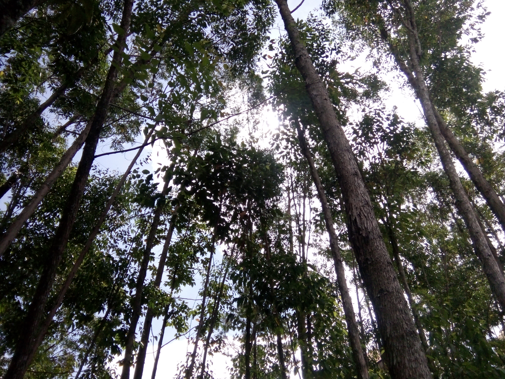

Family's
Alisa Khairunnisa

Galeri
Keluargaku.
Sederhana, ya mungkin itulah keadaan kami sekarang.
Tapi bukan tak mungkin kami bisa mengubah semuanya.
Bukankah Tuhan sudah mengatur semua Rezeky hambanya?.
Baik buruk ayah ku dia tetap ayah ku.
Baik buruk ibuku dia tetap surga ku.
Aku bersyukur di lahirkan dari rahimnya, bukan tak mudah merawat ku semenjak kecil.
Sakit sana sini, pergi berobat kesana-kemari, sampai aku harus dirawat nenek ku dan
pasti kemungkinan orang tua harus 1 bulan sekali jenguk aku Rokan Hilir - Rantau Prapat (Sumatra Utara).
Alhamdulillah adik-adik ku tidak seperti ku.
Tapi, mama bilang "3 anak mama punya cerita yang sama".
Hmmmm, kira-kira apa ya?
Wkwkwkwkwkwkw..........
Ya ke 3 anak mama sama-sama pernah hilang wkwkwkwkwkwkwkwk.......
Aku sendiri waktu itu hilang karna aku ada di tengah-tengah kerumunan banyak
orang waktu mama belanja obat di Apotik. Wkwkwkwkw...
Adik ke 2 ku Fajar hilang di masjid wkwkwkkw..... Kalau itu cukup
kami dan warga sekitar aja yang tau ya hehehehehe....
Nah, kalau adik ke 3 ku Azza jangan ditanyak, 3 anak mama
dialah yang paling aktif hmmmmm,,,,,,.
Karena terlalu aktif hujan badai
gak tau pulang. Kami dah keliling perumahan pun gak ada nampak.
Eh, taunya ketiduran di rumah orang waktu main wkwkwkwkw....
Tapi sayangnya bukan main kami ke dia

Adikku
Tetaplah jadi orang-orang yang selalu merindukan kegaduhan, kerusuhan
didalam rumah. Jangan bosan buat mama papa teriak dari dapur kalau dah ribut
wkwkwkwk....
Kalau gak gitu kadang ada yang aneh heheheheh,,,,

Kucing
Perjuangan nyarinya MasyaAllah.
Popo ni ya kalau sunyi dirumah tenang aja, tapi kalau ada aja orang
datang kerumah hmmmm,,,, aktifnya minta ampunnn.
Putri Ruqiatul Hilal
Sepupu yang dekat dah besar.
Ni orang kalau pas kumpul keluarga kalemnya minta ampun, mau ngomong sama dia
aja susah. Tapi kalau lagi be 2 hebohnya minta ampunnn.
Sepupu
Kitting ku... Rokan Hulu
Masjid ini dinobatkan sebagai masjid Percontohan Paripurna Terbaik Se-Indonesia pada
tahun 2015 oleh Kementrian Agama (Kamenag) RI.
Danau Cipogas merupakan salah satu juga diantara objek wisata yang ada di Kabupaten
Rokan Hulu.